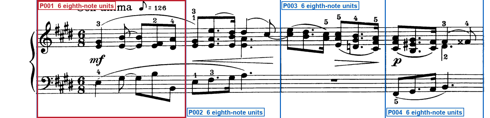
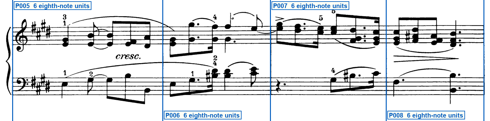
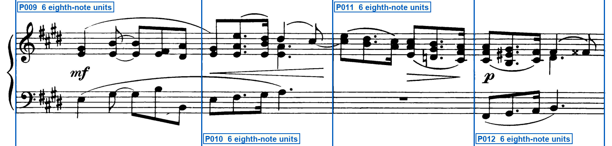
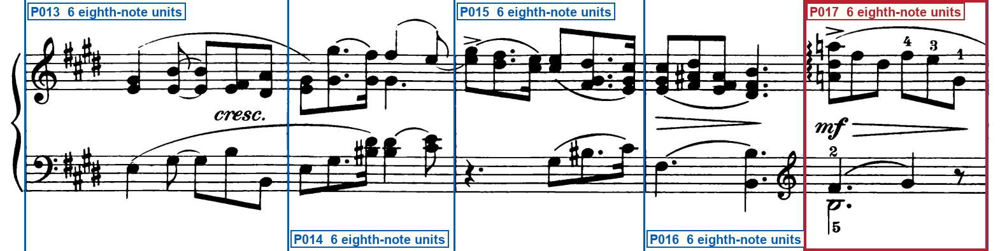
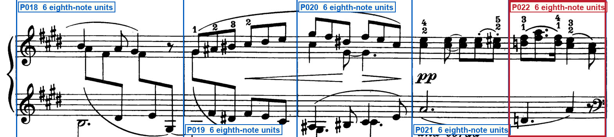
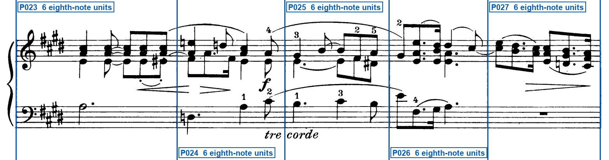
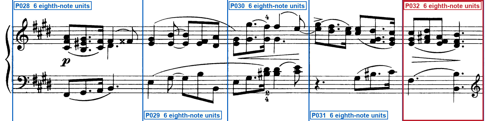
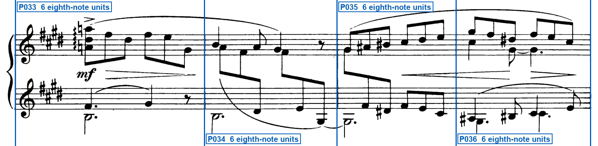
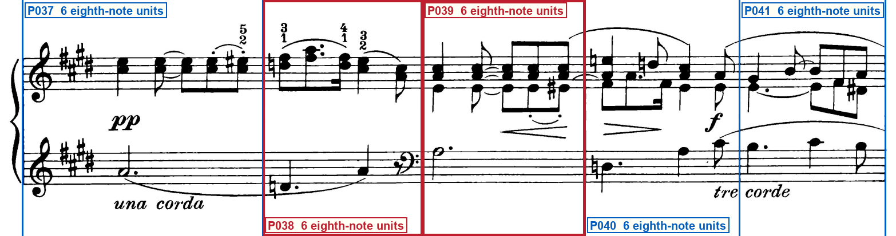
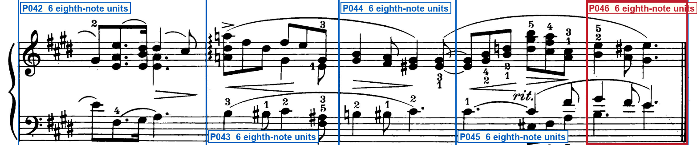

Printed-frame check
schumann_op68_15_spring_song
Print matches the rebuilt lock: forty-six complete 6/8 bars in ten systems, with five bars each on systems 5 and 6, no pickup or repeat, and the shifted left-hand clef changes sitting where the new lock places them.
Blue lines must sit on printed barlines. Red boxes require extra attention.
System 1 — 4 printed regions

- P001: opening_meter_and_key
System 2 — 4 printed regions

System 3 — 4 printed regions

System 4 — 5 printed regions

- P017: lh_treble_clef_after_left_barline
System 5 — 5 printed regions

- P022: lh_cautionary_bass_clef_before_right_barline
System 6 — 5 printed regions

System 7 — 5 printed regions

- P032: lh_cautionary_treble_clef_before_right_barline
System 8 — 4 printed regions

System 9 — 5 printed regions

- P038: lh_bass_clef_immediately_left_of_right_barline
- P039: lh_bass_from_start
System 10 — 5 printed regions

- P046: final_thin_plus_thick_barline
Special checks
- System 1, first region, source_crops/system_01.png: Is the opening region a pickup or a complete 6/8 bar? Complete 6/8 bar. Left staff barline at x=118 after the brace; printed 6/8 and four sharps sit in this first region; both hands fill six eighth-note units under Con anima before the barline at x=595.
- System 10, last region, source_crops/system_10.png: Is the last printed region incomplete, or a complete 6/8 bar with a final barline? Complete 6/8 bar. It is closed by a final thin-plus-thick barline (thin around x=1532, thick around x=1538-1546). Both staves and the double bar stay inside the crop.
- Both pages, all ten systems: Are there printed forward/backward repeats or volta endings? No. No repeat dots and no volta brackets. The last barline is a final double bar, not a repeat.
- Proposed LH treble at the start of the mf bar ending system 4 (physical bar 17): Does the left hand change to treble at the start of the last region of system 4? Yes. After the barline at x=1262 a treble clef is printed on the lower staff, then mf and the last complete 6/8 bar (P017).
- Proposed LH treble as the printed system-5 clef (physical bar 18): Does system 5 open with treble on the lower staff? Yes. Opening clefs on source_crops/system_05.png are treble over treble with four sharps. System 5 has five regions P018-P022.
- Proposed LH bass cautionary at the right of system 5 (physical bar 22): Is there a cautionary bass clef at the right of the fifth region of system 5? Yes. A bass clef sits on the lower staff just before the right barline at x=1549, in P022 (x=1300-1549), after a separate pp / una corda bar at x=1053-1300.
- Proposed LH bass as the printed system-6 / page-2 opening clef (physical bar 23): Does page 2 / system 6 open with bass on the lower staff? Yes. Opening clefs are treble over bass with four sharps. System 6 has five regions P023-P027, beginning at physical bar 23.
- System 6 around the fz, source_crops/system_06.png: Is the vertical stroke at the fz a staff-to-staff barline that yields a fifth region? Yes. A staff-to-staff barline at x=732 stands immediately after the fz chord. That split is required; system 6 is five complete 6/8 bars.
- Proposed LH treble cautionary at the right of system 7 (physical bar 32): Is there a cautionary treble clef at the right of system 7 last region P032? Yes. A treble clef sits on the lower staff just before the right barline at x=1545, after the last complete 6/8 bar of the five-bar system.
- Proposed LH treble as the printed system-8 clef (physical bar 33): Does system 8 open with treble on the lower staff? Yes. Printed opening clefs are treble over treble with four sharps. System 8 is four regions P033-P036.
- Proposed LH bass at the start of the third region of system 9 (physical bar 39): Where is the lower-staff bass clef on system 9 relative to P039? A bass clef is printed on the lower staff immediately left of the barline at x=738. P039 (x=738-1022) is already in bass. Musical effect is at the start of the third region; the glyph sits at the end of the second.
Your three checks
- Do all staves, notes, rests, slurs and other musical marks fit completely inside the page?Expected: Yes
- Do the blue lines match every printed barline, giving 46 printed regions?Expected: Yes
- Do the highlighted pickups, endings, repeats and short regions match the printed score?Expected: Yes
Approve only after all three answers are Yes. Tell the Orchestrator: Frame approved or Frame rejected with the system number.